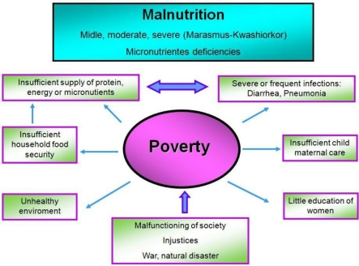
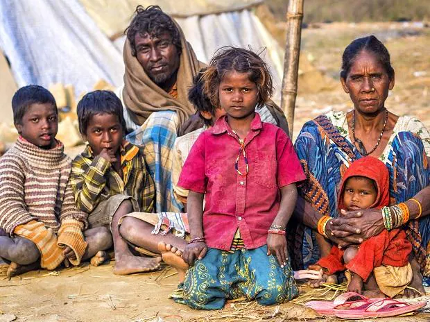

- Malnutrition occurs when the body doesn't get enough nutrients. Causes include a poor diet, digestive conditions or another disease. Symptoms are fatigue, dizziness and weight loss. Untreated malnutrition can cause physical or mental disability. More than 1 million cases per year (India).
- Malnutrition can cause other diseases such like Obesity, Vitamin Deficiency, Anaemia etc.
- It can lead to serious health issues, including stunted growth, eye problems, diabetes and heart disease
Causes of Malnutrition:-


- Poverty is the biggest challenge for the people of India to get a country from developing to developed country. Poverty let the people to face the situation of Malnutrition.
- There are some people those who are unaware of these Diseases and their causes, so to make them aware government should introduce some new schemes and laws, also government should take the surveys for this.
- Government should improve the Health Care, Sanitation and Education system in certain areas.
Innovative solutions for Malnutrition
Nutritional Planning:-
-This involves political commitment by the government. A well planned and well executed long term project can accelerate the developmental process and the benefits can be rewarding and permanent.
- Nutritional planning involves formulation of a nutrition policy and overall long term planning to improve production and supplies of food, ensure its equitable distribution and programs to increase the purchasing power of people. This may include, land reforms, proper guidance in agriculture to help farmers to get better yields from their lands, help in proper marketing of farm produce.
- To help increasing the capacity of people to buy nutritious food in adequate quantity, income generating activities for the weaker sections of the community, making available good quality food in affordable prices through proper public distribution system, etc are some of the plans for the government to implement.
Improved health care system:-
Infections like malaria, dengue and diarrhea are prevalent in our society and they spread acute malnutrition among children and infants. A good health care system that provides immunization, oral rehydration, oral hygiene, periodic deworming, early diagnosis and proper treatment of common illnesses can go a long way in preventing malnutrition in the society.
Nutrition Education:-
People can be educated on :-
- The nutritional quality of common foods should be provided.
- Importance and nutritional quality of various locally available and culturally accepted low cost foods.
- Importance of exclusive breastfeeding for six months and continuing to breast feed up to two years or beyond.
- Recipes for preparing proper foods and good supply of food from locally available low cost food center.
- Importance of milk, eggs, meat or pulses in sufficient quantities in the diet to enhance the protein in body.
- Importance of feeding children and adults during illness.
- Importance and advantages of growing a kitchen garden.
- Importance of immunizing their children and following proper sanitation in their day to day life.